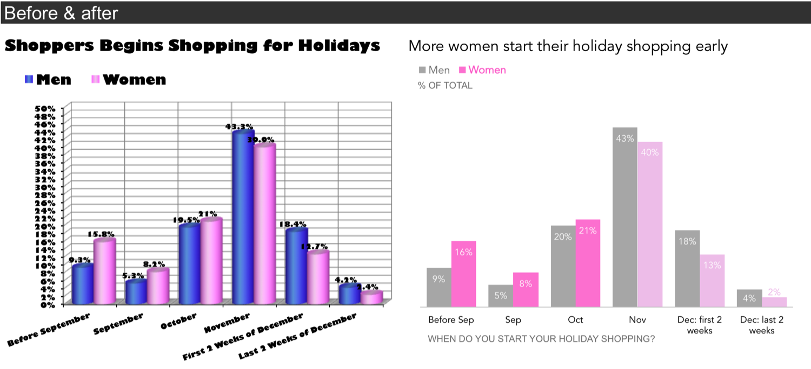

2 Decluttering Plots
Data4All
2.1 Quick Reminder of our plots
This is the plot we’re going to start dressing up today.
2.2 Why do we need to declutter our graphs?
- Reduce cognitive load (help tired and cranky viewers)
- Viewer can focus on what matters
- Not all information is useful for your viewer
2.3 Example: London Subway Diagram
- Triumph of minimal design
- Removes geography
- Emphasizes: what lines to I take to get from A to B?
http://theconversation.com/sublime-design-the-london-underground-map-26240
2.4 Cognitive Load
- Think of your audience:
- Tired and cranky and want you to get to the point!
- Short term memory 5 +/- 2 things at once
- Remove elements that distract from your message
- Shadows, 3D Effects
- Legends/too many colors
- Axis Titles (sometimes)
2.5 Ask Yourself
knitr::include_graphics("image/before-after.png")
2.6 Theming
The neat thing about ggplot2 is that you can modify the plot code by adding modifiers with the + (plus) sign.
We’re going to take a “paper doll” approach to our plot to modifying it - each modifier can be thought of as a set of “clothes” that we dress our plot in.
2.7 Removing Stuff
The defaults for the plot are decent, but have some distracting elements. We can declutter our plot by removing some of these distracting elements.
Before you move on, discuss on slack:
- What parts of the plot are distracting from your message about tv shows that are
risers?
2.8 One note
In each section, we’re trying different types of modification, so they’re not cumulative. However, you can cut and paste the modifications together in the end to have your final customized plot.
2.9 Intelligent Defaults: Using Built in Themes
A lot of the simplification can come from built in themes. Themes are like a full wardrobe for our paper dolls, specifying lots of different details.
Adding theme_minimal() will remove a lot of the background elements. Try it out and compare it with the above plot.
Built in themes let you be more efficient in paring elements down, but you will often find that you need to customize them. That’s what we’ll look at next.
Seaborn lets you set a style using .set_style(). There are number of built in defaults:
whitedarkwhitegriddarkgridticks
2.10 Removing elements
We can customize our plot even further by adding a theme() function to the end of our plot. We’ll use this to remove individual elements from the plot.
Note: If we change any theme attributes after calling theme_minimal(), it will basically overwrite the previous built-in theme. This means that order is important, so keep that in mind!
theme() looks very intimidating, because it has lots of different arguments. We’ll only look at a few of these:
axis.title,axis.title.xandaxis.title.y(The labels for the axes)panel.grid(grid lines)legend.position(Placing the legend, including removing it)
How will we remove these elements? For most of them, we will specify an element called element_blank() to these arguments. What is this? Think of it as a special placeholder that says we don’t want to see this element.
Our approach in Python is to leverage the methods that are attached to our plot object:
sns.set_style().set_xlabel().legend_.remove()
2.11 Remove some Text
Let’s try simplifying our plot by removing the x-axis text. By context, the label seasonNumber isn’t that helpful.
2.12 Remove the Gridlines
Try removing the gridlines. Is that helpful or not?
2.13 Remove the Legend
Sometimes, to remove some items, like the legend, you have to specify it not as element_blank, but as “none”. Try removing the legend.
We can remove the legend using .legend_.remove():
Hmm, it is more simplified, but we have lost all the information about the categories! We can add that information back with the use of color in section 3.
2.14 Your turn
Play with different combinations of these different theme() statements to customize your plot. If you want to remove a line, you can put a # in front of that line. That will make it a comment and that line of code won’t run.
Play around with different combinations of decluttering here. If you want to remove a line, you can put a # in front of that line. That will make it a comment and that line of code won’t run.
2.15 For more information
Take a look at the ggthemes gallery for other pre-made themes that can help you declutter your plot.
https://www.datanovia.com/en/blog/ggplot-themes-gallery/
Look at the documentation for theme() to understand how to customize different elements. Each element maps to four different elements:
element_blank() - we’ve seen this. element_text() - anything that’s text (such as labels - this is where you can specify arguments like angle,size) element_rect() - anything that’s a rectangle (such as the panel) element_line() - anything that’s a line (such as axes and grid lines)